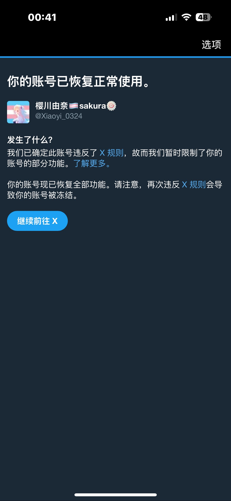
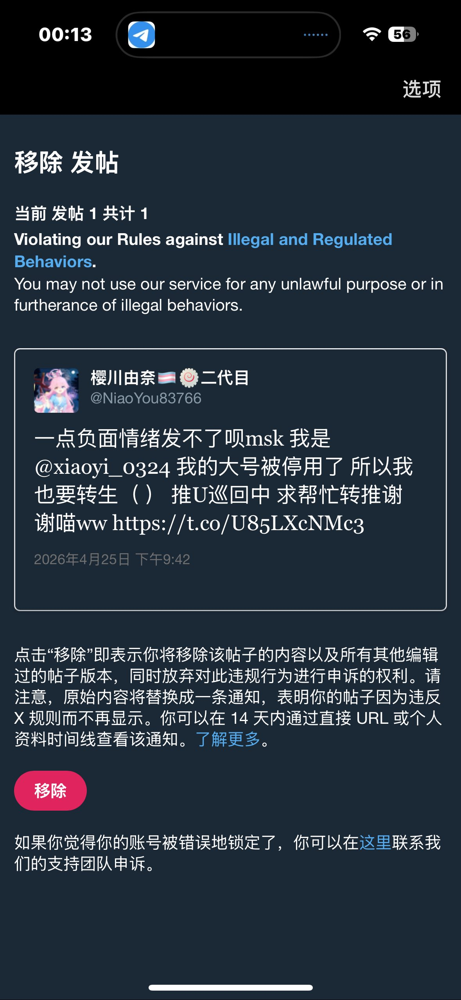
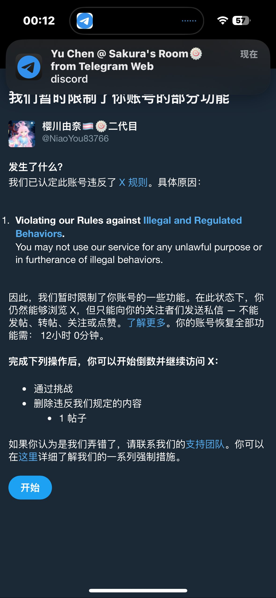

樱川由奈🏳️⚧️sakura🍥
@Xiaoyi_0324
@Numiouo1
就是有人得着咱们举报 我今天上午又被封12h 前两天也有12h 转生到小号 就发个寻回推U的帖子小号被封12小时 我真是没招了😭



樱川由奈🏳️⚧️sakura🍥
@Xiaoyi_0324
到底是谁得着我举报啊😫晶格我错了求求你放过我吧 我二代目也被封了
然后挂一下我在X上的群组 因为一些人没有Telegram
https://t.co/3kD4hXnIyP https://t.co/63fOIxtobT
糯米（备用号）
@Numiouo1
这条也被举报了哦 https://t.co/De5vpOlRQU